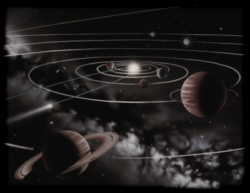

A moving planet in the gravitational field of many huge masses (suns) also exhibits chaotic behavior.
The following fact is remarkable: If the planet moves in the force field of only one sun, then the resulting behavior is very regular and the well-known (non-chaotic) Kepler ellipses emerge. If there are two suns, then the behavior is much more complex but still not chaotic. It needs at least three suns to create a really chaotic behavior.
Clicking the start button starts the simulation. The trace button allows to follow the paths more closely.
Suns that are moved to the parking area are deactivated.
|
 |
Is our solar system chaotic?